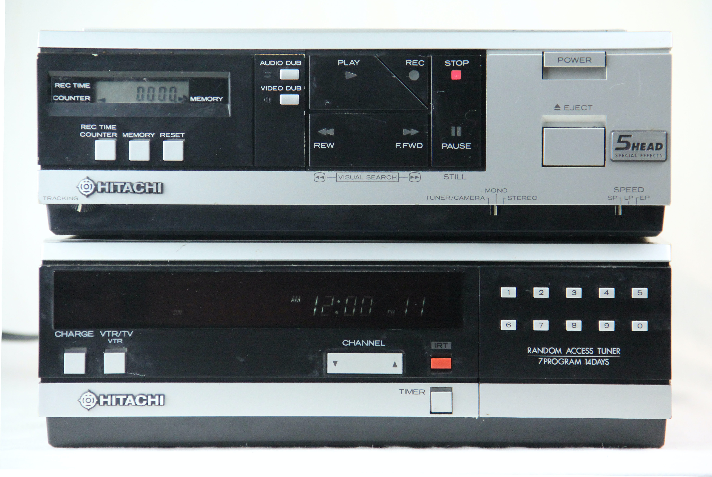

Currently seeking opportunites to showcase my frontend and programming skills.
Enthusiastic about web development and the opportunity to learn.
The more challenging the task the more focused I become.
I love this new career adventure of mine and welcome any chance to speak to like minded
individuals.

I am a professional who has been bitten by the developpment bug like so many.
I have loved the opportunity to further develop myself and build on skills and experience I have
already obtained.
I enjoy spending time with my young family when timew permits and enjoy back getting back to the
outdoors where I was brought up.

Currently studying at Brigham Young University Idaho towards a Bachelors degree in
Applied Technology focusing on a number of Web technologies as well as having completed a
certificate in Programming
focusing on object orientated programming principles with C++, Python and Java with an
application on
mobile app development.
Bachelors degree in Applied Technology in 2022.
Completed Associates Degree in Applied Technology.
Completed certificate in Web-Frontend Development.
Completed certificate in Computer Programming.

These are a collection of projects and challenges that I had tasked myself over my recent
semester.
In order to better advance myself in JavaScript, HTML and CSS development.
I still have a long way to go but enjoyed making a few of these beauties on the way.
Enjoy!


Using the keys highlighted play the drums using the specified keys.
Using JavaScript to adjust css variables from a front-end view.

Brief understanding of form creation.

Using an API to obtain details with JavaScript filter and reduce functions.

Use the canvas and your mouse to bring out your creativity.

Using local storage to store initial lists without using server.

Using JavaScript to create our own video player with custom features.
Applying JavaScript to follow mouse movement over a page of text.

Using JavaScript to apply dropdown boxes to our menu allows for further information to be added.

Using JavaScript to create a countdown clock.
Another use of JavaScript to control the navigation panel.

Once again applying JavaScript to provide another video contoller function.

Creating a simple Javascript arcade game.

Created a dictionary app using a couple of API's to understand the Spanish Language.